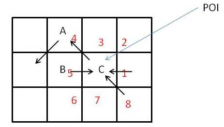

Version 3.01.0000 release May 2005.
Version
3.01.0001. 1/6/06.
Version 3.01.0002. 6/26/06.
Unnumbered. 9/21/07.
Unnumbered. 10/20/07.
Version 3.1.0.3. 9/12/08.
Explanation of this issue.

If it happens in the evaluation of contributing areas that cell C is encountered first. It proceeds to evaluate its contributing area by summing contributions from neighbors in the order 1, 2, 3, 4, … 8 indicated (red numbers). There are contributions from 1, 5 and 8. When direction 5 (cell B) is being evaluated, cell A is inspected to see if it drains to cell B. The angle is 3.926991, which due to numerical rounding is slightly bigger than 5/4pi=3.9269908 so a small fraction of A flows to B. The contributing area of A is then evaluated, but it receives a lot of its contributing area from C. The value for contributing area at C has not been completely summed yet – because neighbors 6, 7 and 8 have not been evaluated yet. So an incomplete contributing area from C is used to evaluate the contributing area at A. Then some small fraction of this contributes to B which contributes to C, then the remainder of area contributing to C is evaluated, so the contributing area of C ends up being correct, but A was evaluated with an incomplete C so is incorrect. The fix was to use a threshold and only count contribution from grid cells where the proportion was greater than the threshold in the accumulation of contributing area. A threshold of 1 E-6 was chosen.